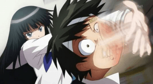
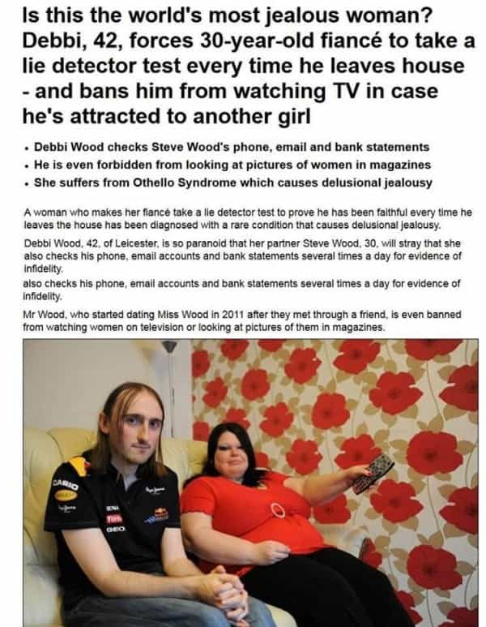

I'm a heterosexual anti-feminist and a conservative male. A frequent news watcher and I dedicate my findings to various MRA sites and anti-feminist authors. I enjoy swimming, hiking, observing mainstream entertainment and masculine literature.


Last year, I decided to stay over at an old friend’s apartment, who had been my roommate back in college. A couple of weeks of residing there, every time I moved in and out of his room, my old buddy would be watching anime on his laptop. His door had a poster of his favorite anime, ‘Sword Art Online’.
He wasn’t an otaku or a dumb weeb, rather to simply put it, it was his pass time or a hobby, to relax from the stress that men face in the modern day world. I remember watching anime as a kid, and I admit, I enjoyed it…
But not anymore.
When he watched anime, he stared at the screen with fascination, as if he was a scientist waiting for the rocket to land on the moon. I was curious, so I asked him to recommend me some anime that he enjoyed. This is where I realized the ugly, misandric nature of anime that teens are exposed to.
The first anime I chose from the list, was about a teenage girl named Misaki, who joined an all boys school which recently opened to girls. She works as a maid to support her family as her father had abandoned them.
A female protagonist that openly hates men
Misaki never trusts her male counterparts, and beats them up if they tried something she didn’t approve of. The whole show is centered on how girls can be better than boys, where she terrorizes men, and how these men are portrayed as nothing but pervs, violent, thirsty mindless jerks.
Usui, the male character, after being yelled at for no reason, is strangely drawn to her, and so are the other boys of the school. This hyper misandric woman deemed ‘attractive’ in the eyes of both anime characters and the male fans. This show is targeted towards girls who call it “one of the most romantic anime”.
I was extremely disgusted and had to quit watching within 10 episodes. I couldn’t have a place in my mind to understand how men watch shows like this and enjoy it.

This is a common formula used by anime and manga creators to depict a strong independent woman who doesn’t need a man. Female superiority is rising within anime, and young may become some of those ‘nice guys’ who get used by women.
The common genre for anime girls called “tsundere“, which refers to a stubborn woman who is abusive to the man she likes, is very popular, shows like Sword Art Online, Bleach, Toradora, DBZ, etc. I could name a hundred more, but that would mean I would include almost every anime. And not just any people are influenced, but the most desperate men across the world. Men who have never had any luck with women are always attempting to fulfill a woman’s most dangerous desires just to keep her.
These shows are not only designed to destroy the male image and present it as inferior, but also to ruin their self confidence as human beings for being male. In dozens of anime, males are portrayed as either weak, or stupid, similar to how Daddy pig in the cartoon Peppa Pig is simply made to be laughed at, or how the main male cast of the Simpsons slowly degraded into ambition-less couch potatoes and the women becoming political figures.
If you grew up watching TV in the 1990s, there is no way you escaped seeing at least a few episodes of Sailor Moon. It redefined the “magical girl” genre in its native Japan and its overseas influence has shown up in girl-power shows like The Powerpuff Girls and is the definition of a feminist anime. Haruka and Michiru, the series’ Sailor Uranus and Neptune, were a lesbian couple who helped girls around the world come to terms with their sexuality. The series also makes a point of commenting on how the less traditionally feminine girls have trouble coping with gender roles, like how Makoto learned to cook because she was teased for being a tomboy.
One of the most notable feminist anime works
The “girl power” concept is counter productive, but unfortunately it’s an inescapable void of entertainment, Charlies Angles, Steven Universe (where the male character is a boy who learns from women), Taylor Swift videos, etc. Australia’s national women’s soccer team the Matildas lose 7-0 to an under FIFTEENS boys’ side, we know that story.
I decided to look up on the internet for further research. Apparently many men have the same opinion. As I’ve read on an MGTOW (anti-feminist, red pill) site:
“…my friend’s been watching this anime called great teacher onizuka and it makes me fucking cringe. The women in that anime do terrible things to the main character. for instance, there’s a girl who lures him into a laundry mat promising sexual favors, but instead, she takes off her clothes, takes his shirt, puts in on, tears it up a bit, and makes him wear all these kinky things only to scream and call for the police claiming sexual assault. The teacher eventually just acts like it wasn’t a big deal. Also, there’s an episode where a female student of his runs into a building she knows is going to be bombed because she wanted to save a fucking piano.
“…today i witnessed something really disgusting in that anime. The students are on a field trip to a tropical island and one of the boys is kidnapped by three other female students. He’s a small, submissive type so he doesn’t fight back. They tie him up and blind fold him before leading him deep into the jungle. Basically, the leader of the three females wanted to leave him there to die because she hated how much of a loser/crybaby he is. She expressed disdain for how he just listened to whatever people told him to do (sounds familiar). Eventually, the girls realize they’re lost and start blaming the boy for everything. They tell him to man up and get them out of the situation and when he starts to take authority by telling them to remain calm… “
Male disposability in anime was the right word I was looking for. Naruto has plenty of scenes where he is beaten up by women. Not to forget, where I thought Gintama would be free of male bashing, where Shimura Tae, a smiley woman constantly beats up a ‘hairy’ man – simply for asking her out.
Is this supposed to be comedy?
There’s plenty of hentai anime, like Girls Bravo for example, a blue haired boy who is mocked for being short by his female school mates, he is bullied to the point where he’s even ‘allergic’ to women. (Imagine an anime where a girl was treated like trash because she was fat). In one scene of the first episode, the boy accident walks into the bathroom where his female neighbour was taking a shower. She screams and throws a tantrum, she brutally beats him up, where his nose begins to bleed, until he falls into a tub, where he is eventually woken up in a planet where there are only women, however, since he was the only male on the planet, he is sexually harassed constantly through out the episodes and women molest him.
Being an Hentai (porn/pervert/sexual) anime, aimed for men, abusing boys seems to be normalized. In most households of Japan, women control all the finances. I wonder if Japanese men get domestically violated by women the same way as in anime.
Feminization of men is also an issue, perhaps the decline in population is simply because of this hidden feminism in Japan. In Btoom!, a hunger games styled anime, Himiko always carries a stun gun whenever she goes because she is afraid of being touched by men. Her fear of men stems her past experiences with men who attempted to rape her. Her trauma is so severe that she announces to Ryōta that every man on the island is her enemy. On two separate occasions when she is about to lose to a man, who is usually attempting to sexually assault her, she was willing to kill herself along with the enemy using a bomb. Almost every man in the anime attempts to assault her. The male protagonist of the story is a ‘wussy’ who simply allows her to treat him with distaste (yet another stereotypical main male character in anime).
While I was on my final anime, which I watched for research, Mirai Nikki, the female character Yuno will resort to cruel and usually violent methods, most of the time coming out of nowhere, that generally end in bloody deaths of anyone who tries to get in the path of the boy she likes, even if they are his close relatives, effectively making her a “Yandere“. The young girl seems to be having the “othello syndrome”, a type of delusional jealousy, marked by suspecting a faithful partner of infidelity, with accompanying jealousy, attempts at monitoring and control, and even violence. Many men often suffer when their wives who are extremely jealous, where as this “yandere” genre is particular that of a girl who stalks her lover, keeps him away from everyone he loves simply because she wants him as her property.

I also stumbled upon an incomplete game, about a playable Yandere girl, which had many references to Mirai Nikki, on starting the game I had a picture on what it was about. Your character is simply an emotionless teenage girl who harbors feelings for a guy who doesn’t even know she exists. Your mission is to stalk him, and try to eliminate “rivals”, so that she has him for herself. By eliminate meaning, to kill. The game would even include your crush’s sister, who has a chance of being a rival. (Think of a scenario where a boy would be stalking a girl, taking her belongings, sniffing or licking them to gain arousal, where he tries to keep her friends away from her, there would be a different response)
In the basement of the game, one would come across tape recording, when played, it reveals that your character’s mother (I assume) murdered everyone close to her crush, and tied him down onto a chair, forcing him to give in to her requests.

A wonderful game that encourages young girls to stalk and manipulate their crushes
Recently, I was informed that the developing team had added a tsundere character and a perverted teacher into the game, who would seduce him perhaps, I don’t feel the need to talk anymore about it.
A perverted female teacher who preys on a teenage boy’s sexuality. There’s plenty of harem (a anime with one guy and many female characters) where he is eventually mistreated by his female counterparts. Even many of Hayao Miyazaki’s films are centered on young “strong empowered” girls. When asked about it, he said:
“When we compare a man in action and a girl in action, I feel girls are more gallant. If a boy is walking with a long stride, I don’t think anything particular, but if a girl is walking gallantly, I feel ‘that’s cool’. Maybe that’s because I’m a man, and women may think it’s cool when they see a young man striding. At first, I thought ‘this is no longer the era of men‘.But after ten years, I grew tired of saying that. I just say ‘cause I like women’. They are more reality.”
All these point out why there are sites entirely dedicated to feminism in anime.
Yesterday, I decided to get in touch with my friend, to ask him about his life and job. He’s a stereotypical “nice guy” who remains friend zoned. He lets women pinch his cheeks and push him, when he just laughs it off. If a woman does something unfair to him, he simply sweeps it under the rug.
“I’m not interested in dating currently” he said when I asked him if he had a girlfriend. Either anime had terrorized him to protecting his virginity, or he’s simply happy being treated like a loser in a tsundere anime by his female co-workers, just like the great teacher Onizuka.
Read More: How Working At Comic-Con Showed Me That America Is A Nation Of Cucks